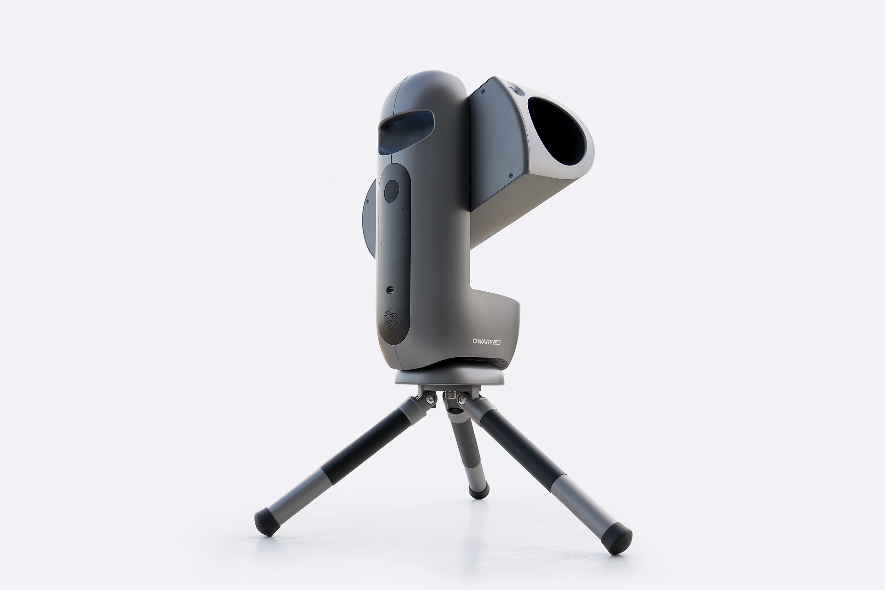
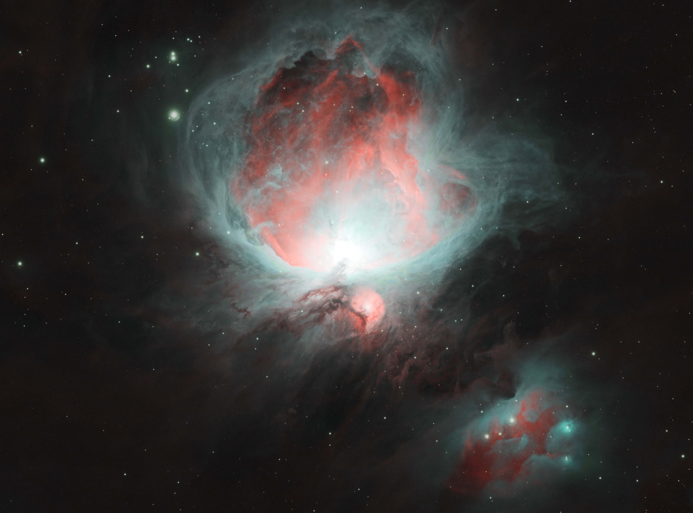
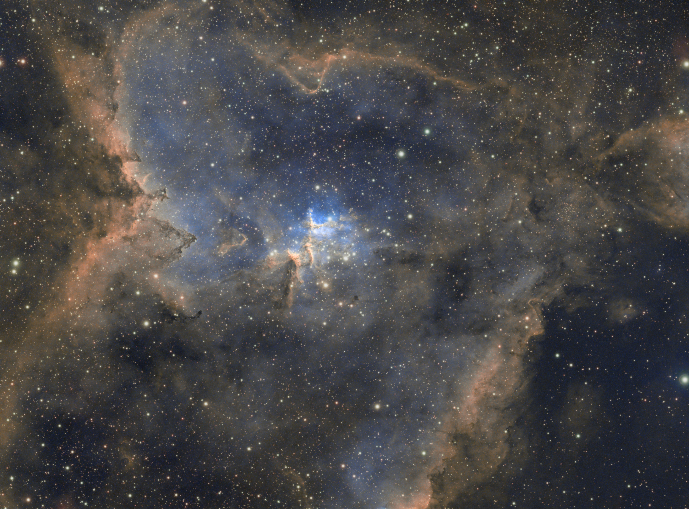
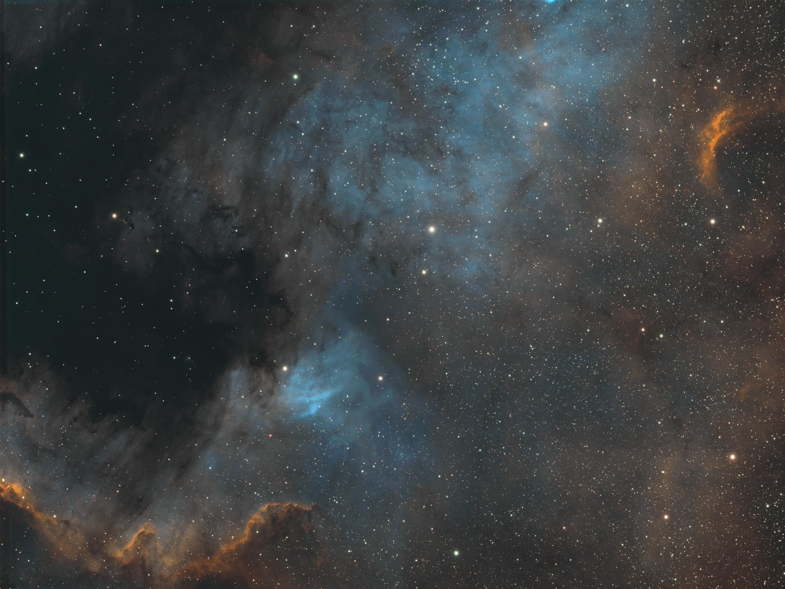
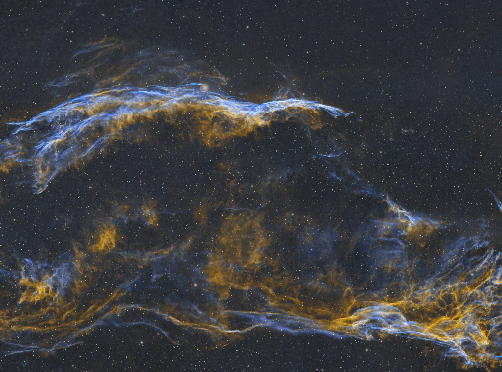
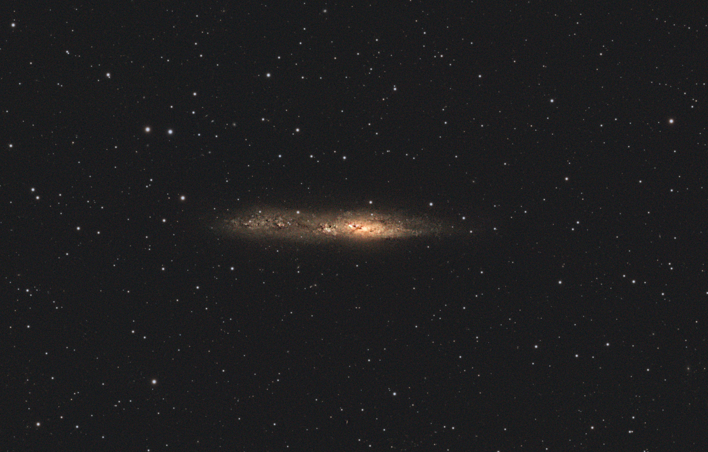

DWARFLAB DRACO: First Look & Image Processing
This review is based on specs and unprocessed data supplied to me by DwarfLabs. At the time of writing there is no reviews carried out by anyone outside of DwarfLabs.
Introduction
Draco is DwarfLabs lates smart telescope and marks their entry into the premium smart telescope range.
Starting at £1,299 It's not just the price that is drawing attention and has already been recognised as a CES 2027 Innovation honoree.
Lets dive in to some of the specs and features.
Disclosure: DRACO data was captured by the DWARFLAB testing team and processed by Our Astro Journey. This is a data-processing first look, not a physical hands-on telescope review.

Specifications and what they mean for beginners
Key published specifications. Confirm final edition-specific details against DWARFLAB documentation before publication.
SHO colours are assigned during image processing. They are not necessarily the colours your eyes would see through a telescope.
Rotating sensor and cooling
One of my favourite features is the rotating CMOS sensor. This should help reduce field rotation and allows you to align your target via the app as you wish.
It also has intergrated sensor cooling. As you take images, especially longer exposures, the sensor heats up which can cause your image to look grainy. With cooling, this should be reduced.
There is two different versions of the telescope available. The standard is currently listed at £1,299. This has an internal solar filter as well as the dual band filter. Ha and OIII.
The SHO version is currently listed at £1,449 and has an external solar filter and 2 dual band filters. Ha and OIII, and SII and OIII. This is what allows you to capture SHO images.
Processing the DRACO data
All the images where processed in Siril using XTerminator scrips and Veralux scripts followed by post processing in Gimp.
Orion Nebula
Filter: HO dual-narrowband (Hα / OIII) | Integration: 3 hours | Bortle: 3
Captured by DWARFLAB testing team; processed by Our Astro Journey.

Heart Nebula
Filter: HO dual-narrowband (Hα / OIII) | Integration: 3 hours | Bortle: 3
Captured by DWARFLAB testing team; processed by Our Astro Journey.

North America Nebula (C20)
Filter: HO (Hα / OIII) + SO (SII / OIII) | Integration: 4 hours 55 minutes | Bortle: 1
Captured by DWARFLAB testing team; processed by Our Astro Journey.

Veil Nebula
Filter: HO dual-narrowband (Hα / OIII) | Integration: 2 hours 35 minutes | Bortle: 3
Captured by DWARFLAB testing team; processed by Our Astro Journey.

String of Pearls
Filter: Astro | Integration: 1 hour 45 minutes | Bortle: 2
Captured by DWARFLAB testing team; processed by Our Astro Journey.

Strengths, limitations and beginner suitability
[WRITE YOUR ASSESSMENT HERE]